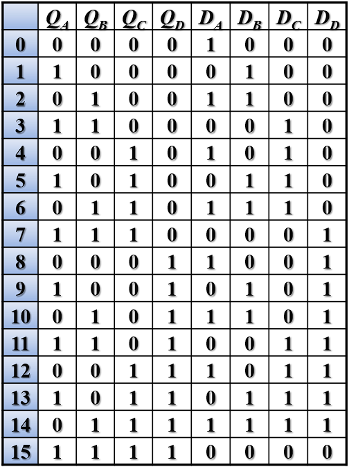
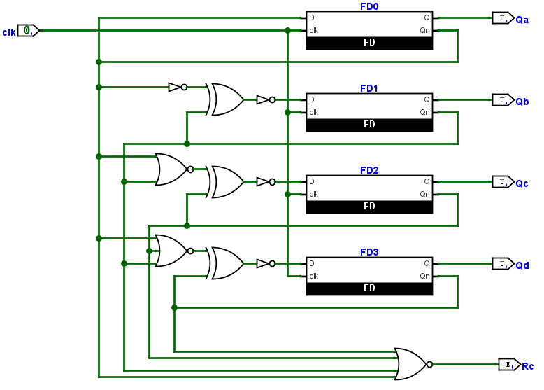

同步计数器
计数器用来存储特定事件或过程发生次数的设备，每个时钟输入的脉冲都会使计数器增加或减少。计数器电路通常由多个触发器级联连接而成。本实验设计的同步计数器，所有触发器的时钟输入端连接在一起，由输入时钟脉冲触发，所有触发器的状态是同时改变的。
四位同步二进制计数器
请注意
模块 Counter4b 必须使用原理图实现
四位二进制计数器输入时钟信号，输出为四位二进制值，二进制值从高位到低位分别是 Qd, Qc, Qb, Qa。每一个时钟信号的上升沿，{Qd, Qc, Qb, Qa} 的值就自增。根据功能描述，可以得到真值表如下，其中 Q 表示当前状态（输出），D 表示下一状态（下一个时钟上升沿到来后的输出）：

根据真值表，可以得到以下激励函数（略有问题，请自行解决）：
\[\begin{align}
D_A &= Q_A\\
D_B &= \overline{Q_A \oplus \overline{Q_B}}\\
D_C &= \overline{\overline{\overline{Q_A} + \overline{Q_B}} \oplus \overline{Q_C}}\\
D_D &= \overline{\overline{\overline{Q_A} + \overline{Q_B} + \overline{Q_C}} \oplus \overline{Q_D}}
\end{align}\]
进位发生在四位数据均为 1 时，因此可以得到：
\[
R_C = Q_AQ_BQ_CQ_D = \overline{\overline{Q_A} + \overline{Q_B} + \overline{Q_C} + \overline{Q_D}}
\]
可以得到电路图，电路名为 Counter4b：

电路图中的 FD 为 D 触发器，但我们在 Lab9 中实现的触发器没有重置或初始化的值，因此在 Logisim 中画一个“空壳”即可，导出 Verilog 代码后，将 FD.v 中的内容替换如下：
| module FD(
input clk,
input D,
output Q,
output Qn
);
reg Q_reg = 1'b0;
always @(posedge clk) begin
Q_reg <= D;
end
assign Q = Q_reg;
assign Qn = ~Q_reg;
endmodule
|
请确保模块端口定义如下：
module Counter4b(
input clk,
output Qa, Qb, Qc, Qd,
output Rc
)
仿真
自行书写仿真文件，对 Counter4b 进行仿真。
下板验证
顶层模块如下：
| module Top(
input wire clk,
output wire LED,
output wire [7:0] SEGMENT,
output wire [3:0] AN
);
wire Qa;
wire Qb;
wire Qc;
wire Qd;
wire [3:0] Hex;
/* module clk_1s at submodules/clk_1s.v */
clk_1s m0(.clk(clk), .clk_1s(clk_1s));
/* You need to implement module Counter4b */
Counter4b m1(.clk(clk_1s), .Qa(Qa), .Qb(Qb), .Qc(Qc), .Qd(Qd), .Rc(LED));
assign Hex = {Qd, Qc, Qb, Qa};
// Please replace module below with your module completed in Lab 6
// Pay attention to the correctness of the module name and port name
// NOTE: SEGMENT and Segement are different port names
// BTN[0]: LE, valid with value 0
// BTN[1]: point, light with value 1
// SW[7:4]: AN, light with value 1(AN[i] = ~SW[i+4])
// SW[3:0]: number to display
DispNum display(.BTN(2'b00), .SW({4'b0001, Hex}), .SEGMENT(SEGMENT), .AN(AN));
endmodule
|
子模块 clk_1s 文件 clk_1s.v与约束文件。
十六位可逆同步二进制计数器
与“四位可逆同步二进制计数器”相比，十六位可逆同步二进制计数器拓展位宽到 16 位，且添加了一个控制信号 s 用来选择“自增”或“自减”。
请确保你的计数器功能：
- 在时钟上升沿对输出
cnt 进行修改；当 s = 0 时进行自增，s = 1 时进行自减。
- 同步重置信号
rst 高位有效，即在时钟上升沿时若 rst = 1 才进行重置，重置时将 cnt 修改为 0。
- 非饱和计数，当前计数若为
16'hFFFF 则自增后为 16'h0；当前计数若为 16'h0 则自减后为 16'hFFFF。
请在以下代码的基础上进行修改：
| /** module RevCounter
* input
* clk: A clock signal driven by module clk_1s.
* s: 0 for increment, 1 for decrement
* output
* cnt: a 16-bits register
* Rc: rise when the counter reset(i.e. carry will be set), that is, Rc becomes 1 when
* increment(s=0 & cnt=F) or decrement(s=1, cnt=0)
*/
//! NOTE: DO NOT CHANGE THE MODULE NAME & PORT NAMES
module RevCounter(
input wire clk,
input wire rst,
input wire s,
output reg [15:0] cnt=0,
output wire Rc
);
/* Your code here */
endmodule
|
仿真
完成模块 RevCounter 后，自行书写仿真代码进行仿真。
下板验证
使用顶层模块进行下板验证，需要调用 Lab7 中实现的 DisplayNumber 模块，使用约束文件。：
| module Top(
input wire clk,
input wire [1:0] SW,
output wire LED,
output wire [7:0] SEGMENT,
output wire [3:0] AN
);
wire[15:0] cnt;
wire [3:0] Hex;
wire clk_1s;
/* module clk_100ms at submodules/clk_1s.v */
clk_1s clk_div_1s (.clk(clk), .clk_1s(clk_1s));
/* You need to implement module RevCounter */
RevCounter counter(.clk(clk_1s), .rst(SW[1]), .s(SW[0]), .cnt(cnt), .Rc(LED));
// Please replace module below with your module completed in Lab **7**
// imoprt submodules for module DisplayNumber from your prev. project
DisplayNumber display(.clk(clk), .rst(1'b0), .hexs(cnt), .LEs(4'b0000), .points(4'b0000), .AN(AN), .SEGMENT(SEGMENT));
endmodule
|
实验报告要求
四位同步二进制计数器
- 四个触发器激励函数
Qx 的化简过程与结果。
Counter4b 原理图截图。- 仿真代码，仿真结果与对波形的解释。
- 下板拍照。
十六位可逆同步二进制计数器
RevCounter 代码。- 仿真代码，仿真结果与对波形的解释。